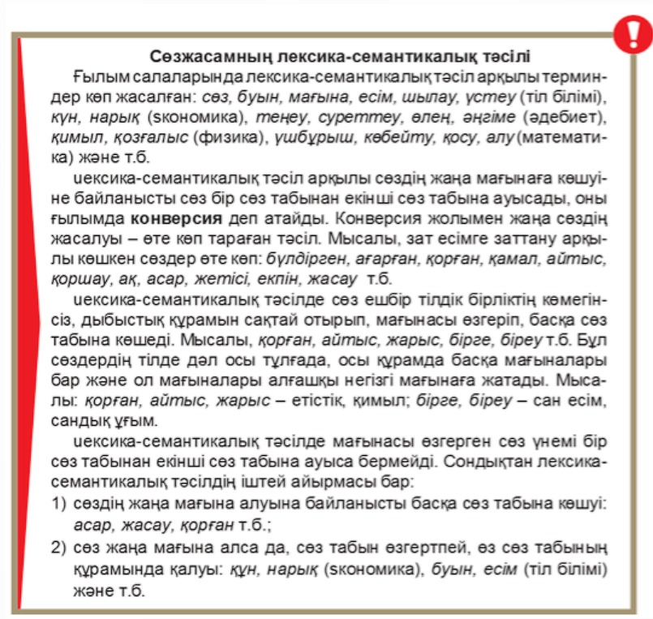

9-ТАПСЫРМА
Ақпараттық-коммуникациялық жаһандану
I. Теория
Мақсаты: Мәтінде көтерілген ақпаратты талдай отырып, негізгі ойды анықтап және ғаламдық мәселелермен байланыстыру.
Міндеттері: Адамзат дамуының жаһандық мәселелеріне, яғни ұлттық мәдениеттің жаһандану үрдісіне, экономикалық, ақпараттық-коммуникациялық жаһандану мәселелерін қарастыру.
Бағалау критерийлері: Оқылым және тыңдалым материалдары бойынша негізгі ақпаратты іріктеу.
Дәрістің қысқаша тезистері
Әлемде болып жатқан кең ауқымды қайта құрулар ақпараттық-коммуникациялық технологиялардың қарқынды дамуымен тығыз байланысты. Ғаламдық ақпарат, ақпараттық-коммуникациялық технологиялар – ХХІ ғасыр қоғамының қалыптасуына әсер ететін ең маңызды факторлардың бірі.
Ақпараттық дамудың жаһандық жүйесі – қазіргі заманғы интеграциялық процестердің ішіндегі аса ықпалдысы. Оған коммуникациялық мүмкіндіктерді дамыту және ғарыштық кеңістікті ақпарат беру үшін пайдалану, жаһандық ақпарат желілерінің пайда болуы және тез қарқынмен дамуы, адамзат тұрмысындағы көптеген үрдістердің компьютерлендірілуі жатады. Сонымен қатар келешекте ақпараттық-коммуникациялық кешендердің көмегімен екі бағыттағы ғарыштық жүйені дамыту; бизнесті, өндірісті, үй шаруасын басқарудың біртұтас жүйесін құру; өмір сүру үрдістерінің мейлінше үлкен бөлігін компьютерлендіру мен роботтау жүреді. Олай болса, компьютерлік технологиялардың ғаламдық-ақпараттық кеңістікті қалыптастыруда, ақпараттық қоғамды дамытуда маңызы зор.
(Б.Сағындықова)

Ақпараттық-коммуникациялық жаһандану және жаңа технологиялар
Бақылау сұрақтары:
- Адамзат тұрмысындағы көптеген үрдістердің компьютерлендірілуіне қалай қарайсыңдар?
- ХХІ ғасыр қоғамының қалыптасуына қандай маңызды факторлар әсер етеді?
- Ақпараттық-коммуникациялық жаһандану дегенді қалай түсінесіз?
Тапсырманы орындау бойынша нұсқаулық (орындау тәртібі):
- Мәтінді түсініп оқиды, түсінгенін айтады;
- Ережелерді оқып, есте сақтап алады;
- Сұрақтарға жауап береді.
Тапсырмадан күтілетін нәтиже: Берілген ақпаратты оқу, сұрақтарға жауап беру, ережені жаттау.
Тапсыру формасы: Ауызша түрде.
Модуль / пән бойынша ұсынылатын әдебиеттер тізіміне сілтемелер: Okulyk.kz - Қазақ тілі (10-сынып)
II. Практика (СӨЖ № 9.2)
1-тапсырма. Мәтінді талдау
Тапсырма: Мәтінді оқып, құрылымы мен рәсімделуін, жанрлық ерекшеліктерін талдаңдар.
Нұсқаулық: Мәтінді оқиды; мәтіннің құрылымы мен рәсімделуін анықтайды; жанрлық ерекшеліктеріне талдайды.
Күнделікті өмірдегі компьютерлік технологиялар
2-тапсырма. Эссе жазу
Тапсырма: Күнделікті өмірде сенің жұмысыңды жеңілдететін компьютерлік технологиялардың тізімін жасаңдар. Олардың ақпараттық-коммуникациялық жаһанданудағы рөлі туралы аргументті эссе жазыңдар. Сөз саны – 150–170.
Нұсқаулық: Эссе мазмұны мәлімделген тақырыпқа сәйкес болады; жұмыста автордың көзқарасының болуы шарт; барлық тұжырымдар негізделіп, дәлелденуі керек.
Тапсыру формасы: Жазбаша түрде.
Модуль / пән бойынша ұсынылатын әдебиеттер тізіміне сілтемелер: Okulyk.kz - Қазақ тілі (10-сынып)
III. Бағалау парағы
| № | Тапсырма | Дескрипторлар | Ұпай саны | Студенттің ұпай саны |
|---|---|---|---|---|
| 1 | Бақылау сұрақтары: |
• Мәтінді түсініп оқиды, түсінгенін айтады • Ережелерді оқып, есте сақтап алады • Сұрақтарға жауап береді |
10 балл 5 балл — |
|
| 2 | Мәтінді оқып, құрылымы мен рәсімделуін, жанрлық ерекшеліктерін талдау. |
• Мәтінді оқиды; • Мәтіннің құрылымы мен рәсімделуін анықтайды; • Жанрлық ерекшеліктеріне талдайды |
5 балл 10 балл 10 балл |
|
| 3 | Компьютерлік технологиялар тізімін жасап, ақпараттық-коммуникациялық жаһанданудағы рөлі туралы эссе жазу. (150-170 сөз) |
• Эссе мазмұны мәлімделген тақырыпқа сәйкес болады; • Жұмыста автордың көзқарасының болуы шарт; • Барлық тұжырымдар негізделіп, дәлелденуі керек |
20 балл 20 балл 20 балл |
|
| Барлығы: | 100 балл | / 100 | ||